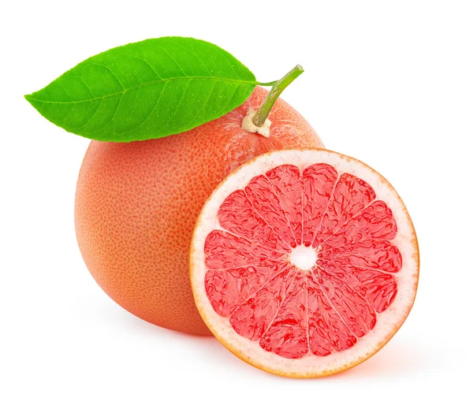

Contiene vitamina C, además de vitamina A, folatos fibra y potasio. 100 gramos es equivalente a 47 calorías.
$22.90 /kg
Destaca su contenido en vitamina C, ácido cítrico (de acción desinfectante, alcaliniza la orina y potencia la acción de la vitamina C), ácido málico en menor cantidad, flavonoides
$50.00 kg.
Además de la vitamina C por la que se le reconoce, la guayaba también contiene mucha agua y pocas calorías y es rica en vitamina A, E, D12, hierro, cobre, calcio, magnesio, potasio, manganeso y fósforo.
$20.00 kg.
Aporta 2 g de fibra y 86 mg de vitamina C, por lo que evita la aparición del escorbuto, que es la deficiencia de esta vitamina. Además, es fuente de vitaminas A, B2 y B3 y de minerales, como el potasio, el calcio, hierro, fósforo y magnesio.
$40.00 kg
